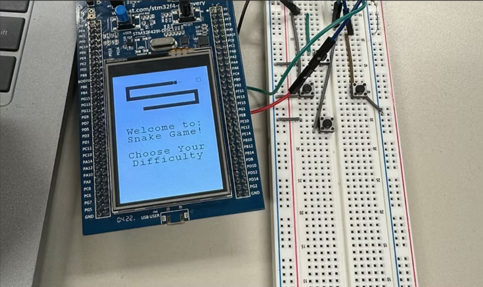
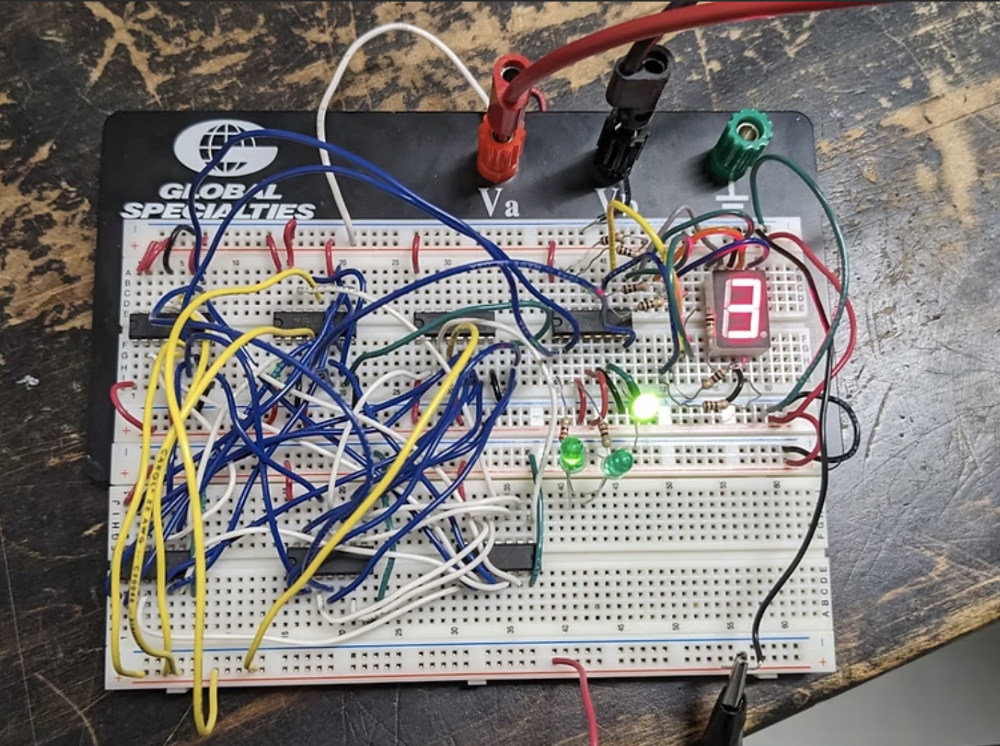
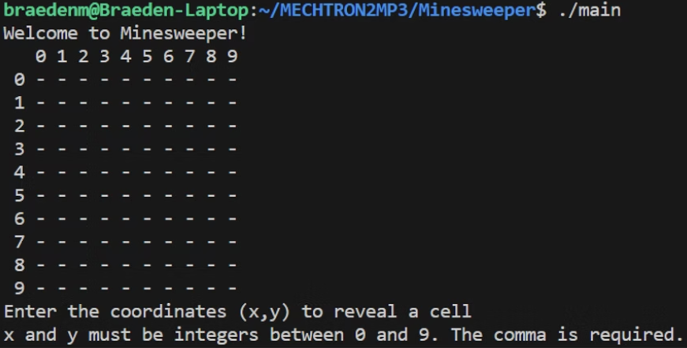
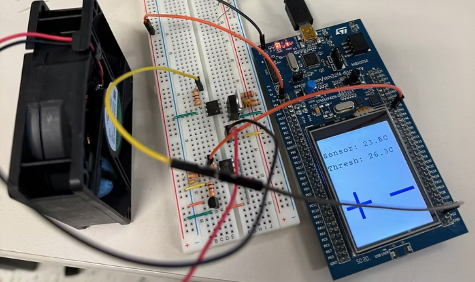
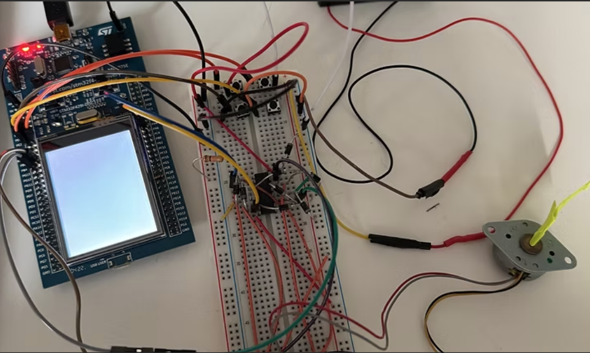
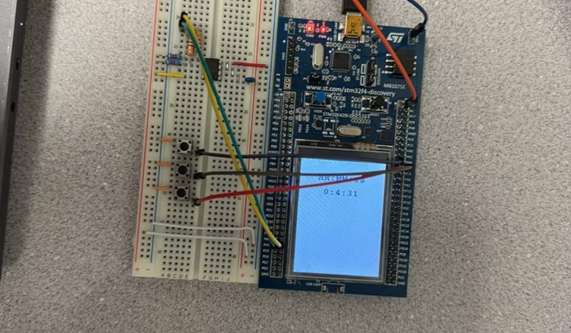
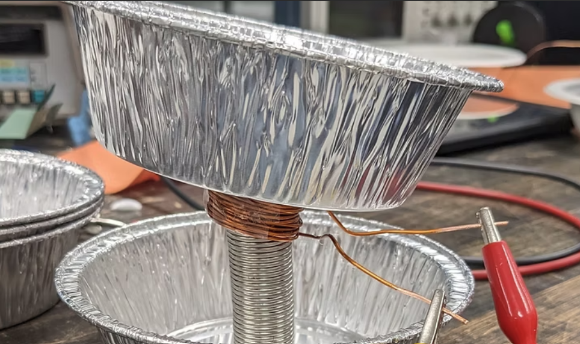

Analog/Digital Circuitry, Programming in C, Embedded Systems
Year 2
This year I learned about Statics & Dynamics, Analog & Digital Circuitry, Programming in C, Embedded Systems, Data Structures & Algorithms, Electricity & Magnetism & Mechanical Measurements

Snake Game
This project allowed us to create anything we wanted using the STM32 and an assortment of electrical components. I chose to create the snake game. This involved using the built in LCD display to create a dynamicly updating screen with the onboard clock. The game is controlled with 4 external push buttons and the onboard select button.
Logic Gate Circuit
The final project for my circuitry class was to create a digital circuit using logic gates and JK flipflops that displays my student number on a 7-segment display.I used k-maps and truth tables to find boolean expressions that I used to create a simulation of my circuit in Multisim, which I then created on a breadboard.

Minesweeper
My first project in C was to create the classic game of Minesweeper

Temperature Sensing Cooler
In this project, there is a temperature sensor that reads the temperature of the room in real time. Once the system heats up enough and the threshold temp is reached, a fan will turn on to cool the system.

Stepper Motor
In this project, we used a stepper motor to create a sort of 'clock'. The motor will turn at a very specific rate, while able to increase and decrease speed, change direction and switch the rate.

Alarm Clock
In the project, a custom alarm clock was made that can also save the time using an EEPROM chip.

Speaker
In the project, a speaker was made using everyday materials. This was the third iteration of our design, because we wanted to continue to improve it to create a louder and clearer soundThe motor control for the joystick to the motors is done through an arduino using C++
